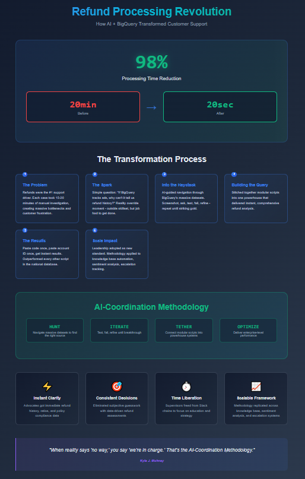

Kyle Mohney
Kyle Mohney
Kyle Mohney
Kyle Mohney

At Thumbtack, refunds were the number one driver of customer support volume. Every day, thousands of calls circled back to the same request: “I want my money back.”
The process was painfully slow:
Each case ate fifteen to twenty minutes. Supervisors were buried. Refund decisions dragged. Customer frustration mounted.
And here’s the truth: the majority of the time, those refunds were rightfully declined. Most users didn’t fully understand how the app or program worked. My role was to help fill that knowledge gap — but as any seasoned supervisor knows, you can’t start with explanation. It’s refund first, gap-fill second; otherwise, you’re talking to a brick wall. Even with advanced conversation skills, breaking through resistance in that moment was a challenge.

One day, the bottleneck was too much. Refunds were piling up, supervisors were drowning, and customers were losing patience. We needed a better system that day.
So I asked a simple question: We already use BigQuery to track ads being turned on and off. Why can’t it tell us refund history, too?
I wasn’t a data engineer. I wasn’t supposed to touch SQL. But I had two assets: curiosity and an AI co-pilot.
That was the reality override: even if it was outside my skillset, the job had to get done.
BigQuery is a haystack of haystacks — directories upon directories of corporate data.
The AI guided me: “Look for a directory with XYZ files.”
So I searched. Screenshot. Ask. Test. Fail. Refine.
“Is this it?” Maybe. Try it. Nope. Wrong one.
Back into the haystack. Another directory. Another test.
I repeated that cycle again and again until I struck the right source data.
Finding the data was only step one. The real challenge was stitching it together. BigQuery script confinements meant I had to be creative — tethering a dozen smaller scripts into a single powerhouse.
The final readout gave us everything we needed in seconds:
The entire process was reduced to:
The query was so light it outperformed every other script in the national database — even if you chopped theirs in half.
What once took 15–20 minutes now took 20 seconds — a 98% reduction in processing time.
Most importantly, it gave us back time and headspace to educate pros — to explain policies, set expectations, and close the gap between what users thought the platform did and how it actually worked.
And it all came together in a single day, because that’s what reality demanded.
The real lesson wasn’t just about refunds — it was about solving problems in messy, complex systems.
That methodology carried into future projects: knowledge base automation, sentiment analysis, escalation tracking. Once I understood the pattern — hunt, iterate, tether, optimize — I could deliver impact across the business.
I wasn’t hired to write queries. I wasn’t trained as a data engineer. But by pairing curiosity with AI, I built a system that reshaped how a national company handled its number one support driver — on the fly, in one day, because it had to be done.
That’s the AI-Coordination Methodology: when reality says “no way,” you say, “we’re in charge.”
If you’re facing messy processes or overwhelming data, you can do the same. Curiosity plus AI is all it takes.
Yes. The first working version came together in a single day because the need was urgent and AI accelerated the process.
No. The solution was created with AI assistance, persistence, and curiosity — not a formal data background.
It was optimized for speed and simplicity, pulling only what was needed. It outperformed larger, heavier queries in the national database.
Because refunds were a brick-wall moment. Automation gave us the clarity to make quick decisions, which then opened the door for education and expectation-setting.
The same methodology has since been applied to knowledge base automation, sentiment analysis, reviews calculation, ROI tabulation and escalation management. Once you know how to navigate messy datasets with AI, the possibilities scale across operations.